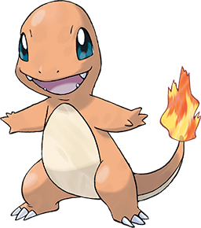

<!DOCTYPE html>
<html lang="cs">
<head>
    <meta charset="UTF-8">
    <meta http-equiv="X-UA-Compatible" content="IE=edge">
    <meta name="viewport" content="width=device-width, initial-scale=1.0">
    <title>Projekt 01 - vizitka</title>
    <link rel="stylesheet" type="text/css" href="style.css">
</head>
<body>
    
</body>
</html><!DOCTYPE html>
<html lang="en">
<head>
    <meta charset="UTF-8">
    <meta http-equiv="X-UA-Compatible" content="IE=edge">
    <meta name="viewport" content="width=device-width, initial-scale=1.0">
    <title>Charmander</title>
    <link rel="stylesheet" href="style.css">
    <link rel="preconnect" href="https://fonts.googleapis.com">
    <link rel="preconnect" href="https://fonts.gstatic.com" crossorigin>
    <link href="https://fonts.googleapis.com/css2?family=Montserrat:wght@200;600&display=swap" rel="stylesheet">
</head>
<body>
    <div class="card">
        <div class="bio">
            <h1>Charmander</h1>
            <h2>#004</h2>
            <center>
                
            </center>
            <p>Charmander is a Fire-type Pokémon introduced in Generation I. Along with Bulbasaur and Squirtle, Charmander is one of three starter Pokémon of Kanto available at the beginning of Pokémon Red, Green, Blue, FireRed, and LeafGreen.</p>
        </div>

        <div class="information">
            <div class="type">
                <h2>Type</h2>
                <p>Fire</p>
            </div>

            <div class="weakness">
                <h2>Weakness</h2>
                <p>Water, Ground, Rock</p>
            </div>

        <div class="evolution">
            <h2>Evolutions</h2>
            <div class="evolution_2">
                
                <p>Charmeleon is a Fire-type Pokémon introduced in Generation I. It evolves from Charmander starting at level 16 and evolves into Charizard starting at level 36.</p>
            </div>
            <div class="evolution_3">
                
                <p>Charizard is a dual-type Fire/Flying Pokémon introduced in Generation I. It evolves from Charmeleon starting at level 36. It is the final form of Charmander. It can mega evolve into Mega Charizard X or Mega Charizard Y.</p>
            </div>
        
            <h2>Mega Evolutions</h2>
            <div class="mega_evolution_1">
                
                <p>Mega Charizard X can be evolved from Charizard using Mega Energy. It costs 200 Mega Energy the firts time and 40 Mega Energy every other time.</p>
            </div>
            <div class="mega_evolution_2">
                
                <p>Mega Charizard Y can be evolved from Charizard using Mega Energy. It costs 200 Mega Energy the firts time and 40 Mega Energy every other time.</p>
            </div>
        </div>
    
        </div>
    </div>
<div class="footer">
    <p>Alena Keňová, 2022</p>
    
    <p>Be my Pokémon GO friend!</p>
</div>
</body>
</html>